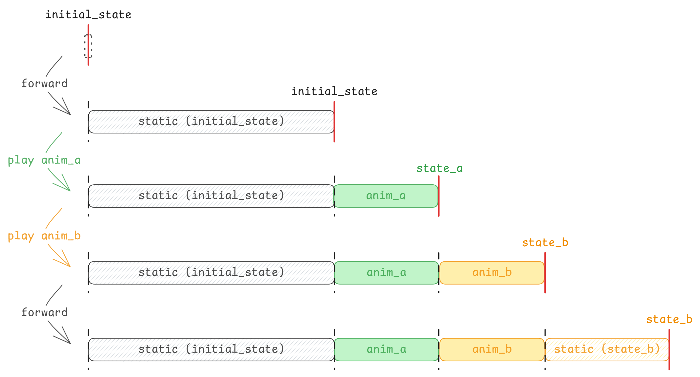

Getting Started
Caution
本章内容已过时，请结合 Example 和源码来了解
Warning
注意：
当前本章内容非常不完善，结构不清晰、内容不完整，目前建议结合 Example 和源码来了解。
在 Ranim 中，定义并渲染一段动画的代码基本长成下面这个样子：
#![allow(unused)]
fn main() {
#[scene]
#[output]
fn scene_name(r: &mut RanimScene) {
let _r_cam = r.insert_and_show(CameraFrame::default());
let r_square = r.insert(square);
r.timeline_mut(&r_square)
.play_with(|square| square.fade_in())
.forward(0.5);
// ...
}
}形如 fn(&mut RanimScene) 的函数被称为场景函数，在其中可以通过 RanimScene 这个核心结构来对时间线进行操作以编码动画。
上面的例子中涉及了一些宏：
#[scene]：为场景函数生成一个对应的static <scene_name>_scene: &'static Scene，包含了场景名称、函数指针、场景设置、输出设置（通过#[output]来设置）等信息。 可以配置一些属性：#[scene(name = "...")]：为场景指定一个名称，默认与函数名相同。#[scene(clear_color = "#ffffffff")]：为场景指定一个清除颜色，默认值为#333333ff。#[output]：为场景添加一个输出： 输出的文件名<output_name>会被命名为<scene_name>_<width>x<height>_<frame_rate>。#[output(dir = "...")]：设置相对于./output的输出目录，也可以是绝对路径#[output(pixel_size = (1920, 1080))]：设置输出像素大小#[output(frame_rate = 60)]：设置输出帧率#[output(save_frames = true)]：设置是否保存每一帧（保存在<dir>/<output_name>-frames/下）
#[wasm_demo_doc]：为场景指定一个文档字符串，默认值为空字符串。
使用 ranim-cli 可以方便的对场景进行预览、渲染：
Important
注意：
如果想要使用 ranim-cli，需要为
crate-type添加dylib。
-
ranim preview：调用 Cargo 构建指定的 target，然后启动一个预览应用加载编译出的 dylib，并监听改动进行重载。ranim preview # 预览根 package 的 lib target ranim preview -p package_name # 预览 package_name 包的 lib target ranim preview -p package_name --example example_name # 预览 package_name 包的 example_name 示例 -
ranim render：调用 Cargo 构建指定的 target，然后启动一个渲染应用加载编译出的 dylib，并渲染动画。ranim render # 渲染根 package 的全部场景的所有输出 ranim render scene_name # 渲染根 package 中名称为 scene_name 的场景的所有输出 ranim render -p package_name # 渲染 package_name 包的全部场景的所有输出 ranim render -p package_name --example example_name # 渲染 package_name 包的 example_name 示例中的全部场景的所有输出
此外，ranim 还提供了一些 api 来直接渲染或预览场景。
render_scene(hello_ranim_scene);
preview_scene(hello_ranim_scene); // 需要 `app` feature1. 场景的构造
任何实现了 SceneConstructor Trait 的类型都可以被用于构造场景：
ranim 自动为 F: Fn(&mut RanimScene) + Send + Sync 实现了该 Trait。
也就是说，对于要求 impl SceneConstructor 的参数：
- 既可以传入函数指针
fn(&mut RanimScene) - 也可以传入一个闭包
|r: &mut RanimScene| { /*...*/ }。
整个构造过程围绕着 &mut RanimScene，它是 ranim 中编码动画 api 的主入口。
2. 时间线
每一条被插入到场景中的时间线都有一个唯一的 TimelineId。
时间线是一种用于编码物件动画的结构，它的内部有一个存储了动画以及展示时间的列表，以及用于编码静态动画的物件状态。
编码动画的过程本质上是在向时间线中插入动态或静态的动画：

2.1 插入物件（创建时间线）
使用 r.new_timeline() 可以插入一条空白的时间线：
let tid: TimelineId = r.new_timeline();// TODO: 后面还没更新
通过 r.insert(state) 可以插入一个物件并为其创建一条时间线：
let square = Square::new(2.0).with(|x| {
x.set_color(manim::BLUE_C);
});
let circle = Circle::new(1.0).with(|x| {
x.set_color(manim::RED_C);
});
let r_square1 = r.insert(square.clone());
let r_square2 = r.insert(square);
let r_circle = r.insert(circle);2.1 访问时间线
时间线在被创建之后，需要通过 r.timeline(&index) 或 r.timeline_mut(&index) 来访问：
{
// 类型为 `&ItemTimeline<Square>`
let square_timeline_ref = r.timeline(&r_square1);
}
{
// 类型为 `&ItemTimeline<Circle>`
let circle_timeline_ref = r.timeline(&r_circle);
}除了通过单一的 &ItemId 来访问单一的时间线，也可以通过 &[&ItemId<T>; N] 来访问多条时间线：
// 类型为 `[&mut ItemTimeline<Square>]`
let [sq1_timeline_ref, sq2_timeline_ref] = r.timeline_ref(&[&r_square1, &r_square2]);同时也可以访问全部时间线的切片的不可变/可变引用，不过元素是类型擦除后的 ItemDynTimelines：
// 类型为 &[ItemDynTimelines]
let timelines = r.timelines();
// 类型为 &mut [ItemDynTimelines]
let timelines = r.timelines_mut();2.2 操作时间线
ItemTimeline<T> 和 ItemDynTimelines 都具有一些用于编码动画的操作方法：
| 方法 | ItemTimeline<T> | ItemDynTimelines | 描述 |
|---|---|---|---|
show / hide | ✅ | ✅ | 显示/隐藏时间线中的物体 |
forward / forward_to | ✅ | ✅ | 推进时间线 |
play / play_with | ✅ | ❌ | 向时间线中插入动画 |
update / update_with | ✅ | ❌ | 更新时间线中物体状态 |
state | ✅ | ❌ | 获取时间线中物体状态 |
有关方法的具体详细定义可以参考 API 文档。
下面的例子使用一个 Square 物件创建了一个时间线，然后编码了淡入 1 秒、显示 0.5 秒、消失 0.5 秒、显示 0.5 秒、淡出 1 秒的动画：
use ranim::{
anims::fading::FadingAnim, color::palettes::manim, items::vitem::geometry::Square, prelude::*,
};
#[scene]
#[output(dir = "getting_started0")]
fn getting_started0(r: &mut RanimScene) {
// Equivalent to creating a new timeline then playing `CameraFrame::default().show()` on it
let _r_cam = r.insert(CameraFrame::default());
// A Square with size 2.0 and color blue
let square = Square::new(2.0).with(|square| {
square.set_color(manim::BLUE_C);
});
let r_square = r.insert_empty();
{
let timeline = r.timeline_mut(r_square);
timeline
.play(square.clone().fade_in()) // Can be written as `square.fade_in_ref()`
.forward(1.0)
.hide()
.forward(1.0)
.show()
.forward(1.0)
.play(square.clone().fade_out()); // Can be written as `square.fade_out_ref()`
}
// In the end, ranim will automatically sync all timelines and forward to the end.
// Equivalent to `r.timelines_mut().sync();`
}2.3 转换时间线类型
在对一个物件进行动画编码的过程中有时会涉及物件类型的转换，比如一个 Square 物件需要被转换为更低级的 VItem 才能够被应用 Write 和 UnWrite 动画，
此时就需要对时间线类型进行转换：
use ranim::{
anims::{creation::WritingAnim, morph::MorphAnim},
color::palettes::manim,
items::vitem::{
VItem,
geometry::{Circle, Square},
},
prelude::*,
};
#[scene]
#[output(dir = "getting_started1")]
fn getting_started1(r: &mut RanimScene) {
let _r_cam = r.insert(CameraFrame::default());
// A Square with size 2.0 and color blue
let square = Square::new(2.0).with(|square| {
square.set_color(manim::BLUE_C);
});
let circle = Circle::new(2.0).with(|circle| {
circle.set_color(manim::RED_C);
});
let r_vitem = r.insert_empty();
{
let timeline = r.timeline_mut(r_vitem);
// In order to do more low-level opeerations,
// sometimes we need to convert the item to a low-level item.
timeline.play(VItem::from(square).morph_to(VItem::from(circle.clone())));
timeline.play(VItem::from(circle).unwrite());
}
}